IntroWhat is the Mandelbrot Plot?
The Mandelbrot Plot is a fractal: a pattern that repeats, where each part
looks similar to the whole. It is built from the formula
Zn+1 = Zn2 + C, where C is a constant
chosen by the tester and Z is the number being tested. You plug the result back in
over and over. The plot records how many times a starting number can be iterated before it
"escapes" (grows past a limit, usually 2).
Part 1Made by Hand
I created the plot by hand using C = 0 for every point. Each grid point is used
as the starting Z0, and I counted the iterations until
|Z| exceeded 2. If it never exceeded 2 within 3 iterations, I colored it green
(3 or more).
Color key: 1 iteration (red) 2 iterations (blue) 3+ iterations (green)
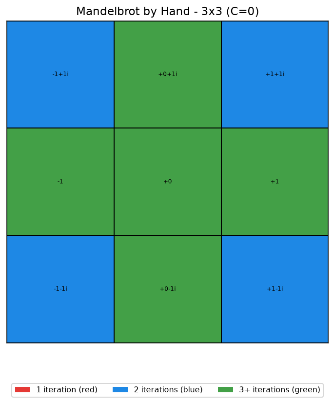
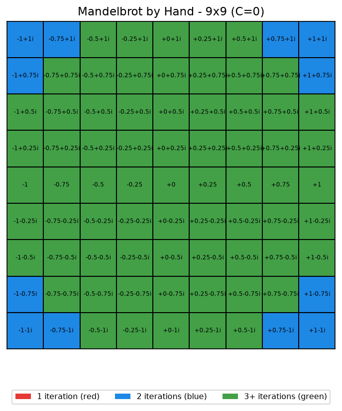
How I did it by hand
For each point I set C = 0 and used the point itself as Z0.
Then I repeated Zn+1 = Zn2: square the number,
check its distance from the origin, and count. The corners escaped quickly (blue), while the
middle points stayed small forever (green). Going from 3×3 to 9×9 adds more points,
which raises the resolution and makes the shape clearer.
Part 2Made with Java
The same plot is far easier to make with a computer. I used a Java applet that loops over
every pixel, runs the same formula, and colors the pixel based on how many iterations it
survived. Below are plots I generated with different r (escape limit) and
counter (maximum iterations) values.
The loop that draws it
while (r < 2 && counter < 1000)
{
counter++;
temp = real;
real = real*real - imag*imag + xx;
imag = 2*temp*imag + yy;
r = Math.sqrt(real*real + imag*imag);
}
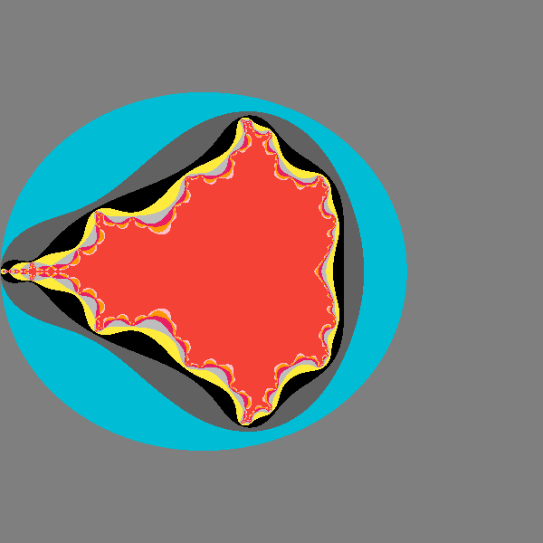
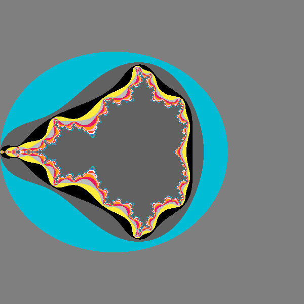
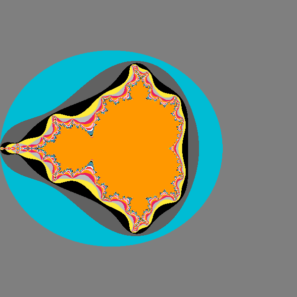
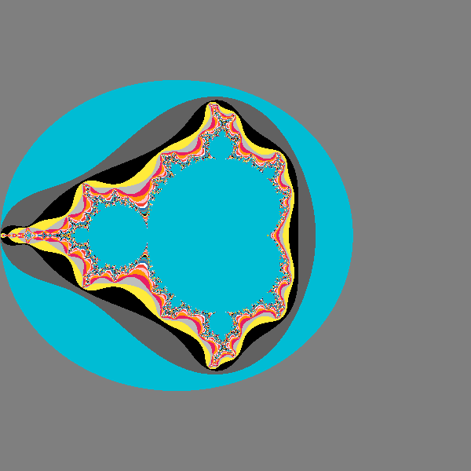
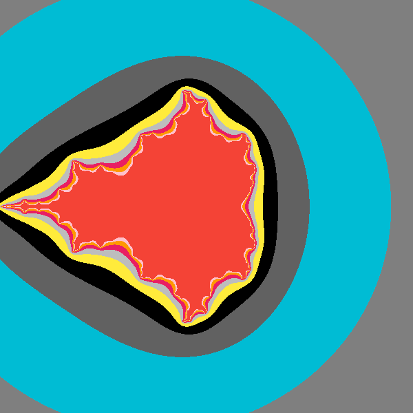
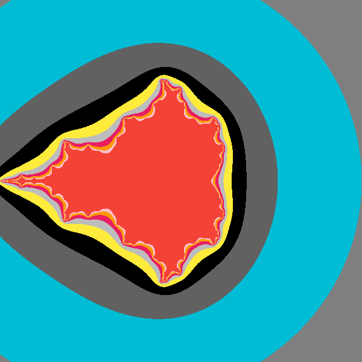
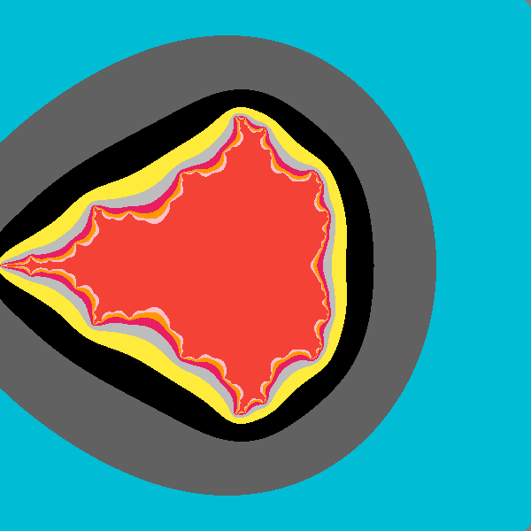
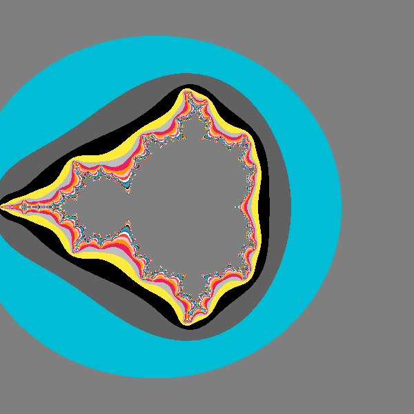
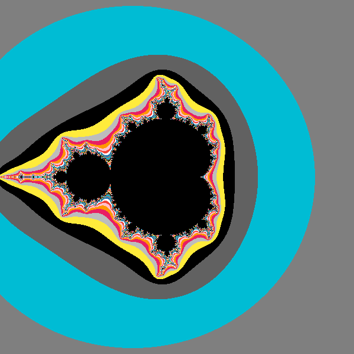
How I did it with Java
I put the source code into a Java compiler (browxy.com) and pressed run. The program walks
through each pixel of the display window, converts the pixel into a complex number, and
loops the Mandelbrot formula. The variable r is the escape limit and
counter is the maximum number of iterations. Higher counter values
give sharper detail; different r values change how quickly points are said to
escape. I changed those values and took a screenshot of each result.
Part 3Advantages & Challenges of Java
Advantages
- Very fast: it does thousands of calculations per second.
- Far more accurate and detailed than doing it by hand.
- Easy to change the picture by editing numbers (limit, iterations, colors).
- You can zoom into any region instantly.
- Colors are chosen automatically by the code, no coloring by hand.
Challenges
- Setting up the applet can be hard; browsers often block Java applets now.
- Small errors like a missing
;or)stop it from compiling. - You have to keep the display size and the
400.0scaling value matching. - The code is not obvious to read if you have not programmed before.
- You need the right tools installed before it will even run.